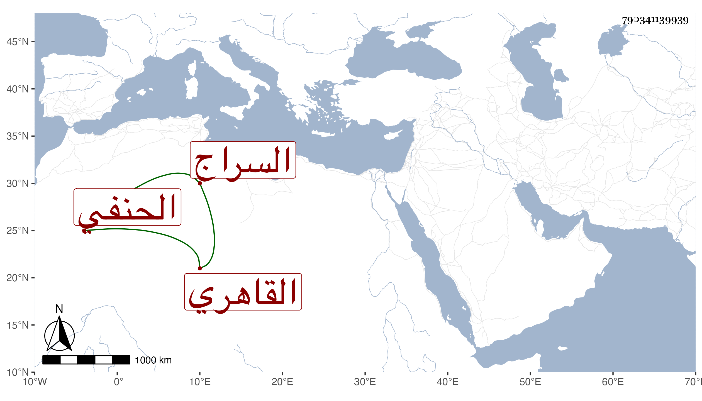

0902Sakhawi.DawLamic.ITO20230111-ara1.EIS1600.790341139939
Biography ID: 790341139939
432
عمر بن منصور بن عبد الله السراج القاهري الحنفي ويعرف بالبهادري . ولد سنة اثنتين وستين وسبعمائة واشتغل بالفقه والعربية والطب والمعاني وغيرها حتى مهر واشتهر ودرس وصار يشار إليه في فضلاء الحنفية بحيث ناب في الحكم والأطباء بحيث انفرد فيه واستقر في تدريسي البيمارستان وجامع طولون في الطب ولكنه لم يكن محمود العلاج . مات في يوم السبت ثاني عشر شوال سنة أربع وثلاثين . ذكره شيخنا في أنبائه ، وقال غيره : كان إماما بارعا في الفقه والنحو واللغة انتهت إليه الرياسة في الطب وتقدم فيه على أقرانه حفظا واستحضارا ومع ذلك فغيره ممن لا نسبة له به فيه أمهر دربة لقلة مباشرته وعدم تكسبه منه وإنما يطلب للأكابر والأعيان في الأمراض الخطرة وكان شيخا معتدل القامة مصفر اللون جدا ولم يخلف بعده مثله في الطب وقد ترشح للرياسة في الأيام المؤيدية فتعصب ناصر الدين بن البارزي عليه بعد أن عقد له مجلس ظهر فيه تقديمه على من نازعه بحيث قال البساطي : وكان ممن حضر ما كنت أظن أن ثم من يحسن تقرير الطب هكذا ومع هذا فأخرجت الرياسة عنه لابن بطيخ وممن انتفع به فيه الشرف بن الخشاب وأذن له بل رغب له عن التدريسين المشار إليهما واتفق ما سيأتي في ترجمته ، وهو في عقود المقريزي رحمه الله .
